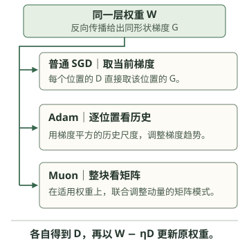

01 / 先分清谁定义误差，谁计算梯度，谁修改参数
损失函数不会独自完成
整个参数更新过程。
监督训练先用标签约束模型输出，再由反向传播计算损失对参数的梯度。梯度描述在当前参数位置附近，参数微小变化会怎样影响损失；优化器据此形成实际更新。

在目标检测中，样本分配先确定哪些预测对应哪些真实目标，从而形成监督与损失。优化器收到的是反向传播得到的参数梯度，不直接读取真实框来选择正样本。
| 环节 | 主要产生什么 | 不能混淆的事 |
|---|---|---|
| 样本分配与损失 | 监督对象、监督目标和误差值 | 不直接决定每个权重最终改动多少。 |
loss.backward() | 计算并累积参数梯度 | 通常不在此时直接执行优化器更新。 |
optimizer.step() | 利用梯度与状态修改参数 | 受参数组、学习率、动量等设置影响。 |
optimizer.zero_grad() | 清理上轮累积的梯度 | 通常不清除优化器动量等历史状态。 |
依据：PyTorch 优化器使用说明。检测监督的前置环节：样本分配怎样落到训练数据上。
02 / 当前梯度有波动，因此引入历史趋势
SGD 使用当前梯度，
动量进一步累积近期趋势。
普通随机梯度下降（SGD）按当前批次得到的梯度更新参数：W新 = W − ηG。由于每个批次不同，梯度可能波动。动量把当前与过去的梯度累积起来，使持续一致的方向得以保留，反复正负变化的部分相互抵消。
对于一个矩阵权重，G 与 M 仍按各权重的位置排列。每个位置累积自己的历史梯度；矩阵不会因为训练次数增加而不断新增行列。“历史趋势”是加权摘要，不是保存全部梯度，也不是预测未来一定往哪里走。
当前梯度相同，历史不同会怎样？
观察同一个标量权重连续 5 次的梯度。两组最后一次梯度均为 +1；起始动量 M₀ = 0，学习率固定 η = 0.1。表中使用上面的 EMA 简式。
窄屏可左右滚动查看完整计算表。
| 步骤 t | 当前梯度 g_t | 动量 m_t | Δw = −0.1m_t |
|---|---|---|---|
| 1 | 1.0000 | 0.1000 | −0.0100 |
| 2 | 1.0000 | 0.1900 | −0.0190 |
| 3 | 1.0000 | 0.2710 | −0.0271 |
| 4 | 1.0000 | 0.3439 | −0.0344 |
| 5 | 1.0000 | 0.4095 | −0.0410 |
最后一次梯度同为 +1。连续同向历史的最终动量为 0.4095，正负交替历史为 0.0837；普通 SGD 此时的更新均为 −0.1000。
当前显示连续同向历史。较大的 β 让状态变化更慢；从零开始且未作偏差修正时，也会使早期动量偏小。不能把 β 较大简单理解为更新一定更大。
共享学习率不意味着所有权重更新相同。例如两个梯度分别为 +0.3、−0.8，η = 0.1 时，普通 SGD 的改动分别为 −0.03、+0.08。正负方向与改动大小本来就可以逐参数不同。
03 / 除了历史方向，还考虑每个参数的梯度尺度
Adam 已经逐参数调整更新，
并非只给全网络乘同一个系数。
不同参数的梯度量级可能不同，单一学习率未必能同时提供合适的更新尺度。Adam 为每个参数维护两份状态：梯度的一阶矩 m，以及梯度平方的二阶原始矩 v。前者保留趋势，后者提供尺度参考。
因此，Adam 中每个权重都有自己的 m、v 和更新尺度。它仍然需要基础学习率 η；自适应缩放不等于自动找到最佳学习率。学习率调度器负责随训练阶段改变学习率，与优化器的更新规则是两个相关但不同的设置。
AdamW 补充了什么？
权重衰减用于约束参数规模。AdamW 将权重衰减与梯度的自适应处理解耦，使衰减不再被混入梯度后一起进入一阶、二阶矩。使用 AdamW 时仍需设置和验证学习率、衰减系数与训练调度。
04 / 先确定处理对象，再理解矩阵变换
Muon 处理权重对应的更新，
不直接处理检测框或特征图。
一个线性层或卷积层已有可训练权重 W。反向传播产生同形状的梯度 G；优化器保存同形状的动量 M。Muon 对由动量形成的待更新量作矩阵变换，得到更新方向 D，再用于修改原来的 W。
| 对象 | 来源与作用 | 形状 |
|---|---|---|
| W：权重 | 网络原有、需要训练的参数。 | n × m |
| G：梯度 | 反向传播产生，表示损失对各权重的局部敏感性。 | n × m |
| M：动量状态 | 当前与历史梯度的加权累积；存于优化器中。 | n × m |
| D：更新方向 | 由待更新量经过 Muon 处理形成，供权重更新使用。 | n × m |
Muon 核心变换的输入是梯度与动量形成的待更新量，输出是更新方向。优化器随后执行 W新 = W − ηD；没有增加一个需要训练的“模式网络”。
卷积核为什么也能变成矩阵？
例如普通卷积 Conv2d(32, 64, kernel_size=3, groups=1) 的权重形状为 [64, 32, 3, 3]，依次对应输出通道、输入通道和卷积核高宽。保留第一维，将后三维展平后得到 [64, 288]，矩阵更新完成再恢复原形状。
通常按各个合适的权重张量分别处理，并非将整个网络拼成一个大矩阵。实现可以把多个矩阵放在批次维并行计算，但这不意味着把它们变成同一组奇异模式。
动量是优化器状态，占用训练存储，但不是新增的可训练网络层。哪些参数适用 Muon 由具体实现决定；通用 PyTorch Muon 与 YOLO26 MuSGD 的参数选择不能直接混同。
05 / 从逐个数值，进一步看整个矩阵的更新结构
同一个更新矩阵，
可以由不同强度的模式组成。
原来的更新可能遇到什么问题？
即使矩阵里的数值看上去差不多大，整体更新也可能集中在少数模式上。Muon 的动机之一，是重新调整这些模式的相对强度，减轻少数模式对更新的主导。弱模式是否有助于学习，仍需实验验证；不能从“小”直接推断“重要”。
这里的模式不是小目标、大目标或某种语义类别。它是一组权重共同变化的数值模式，可以用一个归一化的秩一矩阵表示。秩一表示该模式可写成一个列向量与一个行向量的乘积。
模式 Pᵢ 和强度 σᵢ 都由同一个 M 决定。“强模式”只表示系数相对较大，“弱模式”只表示系数相对较小；没有默认的 100∶1 比例，也没有固定的一套强弱类别。
一个 2×2 例子：100∶1 具体从哪里来？
构造 M = [[50.5, 49.5], [49.5, 50.5]]。沿单位向量 v₁ = (1, 1)ᵀ / √2，两个分量同向相加，得到 Mv₁ = 100v₁；沿 v₂ = (1, −1)ᵀ / √2，两个分量相减，得到 Mv₂ = 1v₂。
在这个对称正定的特殊例子中，左右奇异向量相同，因此 P₁ = ½[[1, 1], [1, 1]]，P₂ = ½[[1, −1], [−1, 1]]，且 M = 100P₁ + 1P₂。两个 P 的元素平方和都为 1，才有一致的比较尺度。
100∶1 来自这个构造矩阵的分解，不是优化器事先设定。若改为 M = [[3, 1], [1, 3]]，同样两种模式的系数变成 4 和 2。这两个例子因具有特殊的共同结构而共享模式；一般矩阵的模式会随其数值变化。
Muon 进一步处理了什么？
在理想化分析中，正交化保留奇异向量所描述的模式，将非零奇异值的尺度调整到 1，再组合出更新方向。因此，它利用的是同一矩阵内部的联合结构；给定梯度与状态后，某个位置的输出可受到同一矩阵其他位置的影响。
这与“每个权重终于有自己的更新”不同。SGD、动量和 Adam 原本就逐权重产生不同更新，Adam 也已经按位置调整尺度；它们只是没有执行 Muon 这种针对奇异模式的变换。
同一矩阵的模式与更新
构造满秩 2×2 待更新矩阵 M。第二个模式的系数固定为 1，第一个可调整。两种结构都只是说明性例子，不代表某层网络的测量结果。
M = 100 × P₁ + 1 × P₂
模式 P₁
元素平方和 = 1
模式 P₂
元素平方和 = 1
组合得到的 M
系数与模式共同决定数值
对称正定例子中，左右奇异向量相同；理想正交化得到单位矩阵。这是本例的结构特点，不是 Muon 总会清零非对角元素。
选择怎样由 M 形成更新方向 D
固定初始权重 W = [[1, 2], [3, 4]]，学习率 η = 0.01；下列数值仅执行一次示例更新。
更新方向 D
权重改动 ΔW = −0.01D
新权重 W + ΔW
直接使用 M：D 中两种模式的系数仍为 100 和 1。更新方向 D 与实际改动 ΔW 相差一个负学习率。
真实实现为什么不直接计算 SVD？弱模式会被无限放大吗？
SVD 有助于解释模式和尺度，但每次训练都对大量矩阵显式分解，代价较高。Muon 通常通过少量 Newton–Schulz（NS）矩阵迭代直接近似这一变换，并不先把每种 Pᵢ 单独算出来再分类。
有限次迭代、数值精度和实现系数都会影响结果，实际奇异值不会精确地全变为 1。零分量不会凭空生出新方向，极小分量也不保证在有限步内达到目标尺度。弱模式还可能包含噪声，正交化不保证必然带来更好的学习。
更新矩阵的强弱不均和损失曲面的曲率是不同概念，不能将这里的奇异值直接解释成 Hessian 的特征值。
动量处理时间上的梯度历史；Muon 进一步处理同一待更新矩阵内部的结构。它增加了一种利用梯度的方式，收益与计算代价需要分别验证。
分解定义：SVD；动机与近似方法：Muon 原作者说明、Muon is Scalable for LLM Training · §2.1。上面的 2×2 数值与交互是独立构造。
06 / 把基础机制放回实际检测训练
MuSGD 混合两种更新，
并按参数类型分配处理方式。
YOLO26 没有要求所有参数都单独使用纯 Muon。MuSGD 在适用权重上同时保留 Muon 更新与动量 SGD 更新，其他参数使用 SGD。其目标是在引入矩阵变换的同时保留已有更新成分；是否更好以具体实验为准。
| 参数类型 | 处理方式 | 含义 |
|---|---|---|
| 二维权重、四维卷积核 | Muon + 动量 SGD | 同一组权重接收两种更新，不是二选一。 |
| 一维偏置、归一化缩放等 | SGD 路径 | 不对它们执行矩阵正交化。 |
本轮 grad is None 的参数 | 跳过该参数更新 | 不能仅凭参数位于优化器中，就认定本轮已被更新。 |
当前训练器显式使用 muon=0.2, sgd=1.0；优化器类本身的构造默认值则是 0.5, 0.5。前者是本次核对的训练器设置，后者只是未显式传参时的类默认值。它们都不同于渐进损失中一对多、一对一的分支系数。
从梯度到权重，实际代码还做了哪些事？
Muon 路径先以 EMA 方式更新动量；启用 Nesterov 时，再将更新后的动量与当前梯度组合为待正交化量。高维张量展平后执行 5 次 NS 迭代，应用尺寸缩放并还原形状。SGD 成分使用另一份动量缓存，随后追加自己的更新。
实现的尺寸缩放、梯度精度、参数组学习率与权重衰减位置都可能影响复现。因此，概念公式只用于理解职责；训练时要固定库版本、记录参数组与完整配置，不能复制几个混合系数就声称复现了论文配方。
muon_update、NS 迭代与 MuSGD.step · 参数组与训练器构造。main 后续可能变化。
论文表 4 报告：在指定 COCO 从零训练对照中，MuSGD 用 500 轮得到 47.4 mAP，SGD 用 600 轮得到 47.0 mAP。它支持所测混合方案的效果，不单独证明奇异模式调整是全部收益来源，也不能直接换算为相同比例的实际耗时下降。
07 / 按任务与完整配方选择，而非按新旧排名
优化器的适用性，
要和训练条件一起判断。
窄屏可左右滚动查看完整对照。
| 方法 | 怎样利用梯度 | 选择时关注什么 |
|---|---|---|
| SGD + Momentum | 累积历史方向，使用学习率缩放更新。 | 成熟视觉训练基线；学习率、调度与训练时长尤其重要。 |
| Adam | 按位置利用一阶矩与二阶原始矩调整尺度。 | 已有 Adam 配方可作为起点；仍需调学习率与正则化。 |
| AdamW | Adam 的自适应更新，加解耦权重衰减。 | 许多 Transformer 和现代视觉配方采用；不能因此认定 CNN 不适用。 |
| Muon | 对适用矩阵的动量更新作近似正交化。 | 确认参数适用范围、缩放约定、实现效率和实际任务收益。 |
| MuSGD | 在指定参数组混合 Muon 与动量 SGD。 | 确认所用库的具体分组和系数，不能当作纯 Muon。 |
例如 TorchVision 的经典 ResNet 配方采用 SGD，ViT、Swin 与 ConvNeXt 的一些配方采用 AdamW。它们说明常见起点，不构成“CNN 只能用 SGD、Transformer 只能用 AdamW”的规则。RMSprop、Adafactor 等也各有应用与状态存储设计；是否需要考虑，应由任务和资源约束决定。
- 先复现当前任务的可靠基线。
从对应模型的完整官方配方开始，记录优化器、学习率、权重衰减、调度、批次与预训练来源。
- 分别给候选优化器合理的调参机会。
相同学习率不意味着公平。比较时应说明调参预算，并使其他条件可比；纯替换名称后效果差，不能直接证明方法无效。
- 同时测量质量与成本。
查看验证集指标、训练稳定性、每步耗时和显存。相同轮数、相同实际时间、达到同等精度所需成本，是三个不同问题。
- 检查随机波动与任务迁移。
小幅提升需要重复运行或说明不确定性。在大模型预训练上有效，不能直接推出工业小样本微调同样有效。
“Adam 收敛快、SGD 泛化好”可以作为某些历史实验的经验背景，不能脱离数据、结构、正则化与训练预算当成结论。Muon 也增加了矩阵运算，训练轮数减少不保证实际运行时间一定更短。
TorchVision 分类训练配方 · PyTorch 优化器与调度器目录 · Muon 预训练与微调的适用边界研究 · 实验公平性与可信度。
08 / 原理、示例、实现与实验分别核对
原始来源与内容边界
- 训练职责、SGD、Adam、AdamW：PyTorch 官方优化器文档。本文链接采用本次核对的 2.15 文档，不代表本机已安装该版本。
- 矩阵分解与权重形状：SVD、Linear、Conv2d。
- Muon 设计动机及 NS：Keller Jordan：Muon: An optimizer for hidden layers in neural networks；扩展研究：Muon is Scalable for LLM Training，arXiv:2502.16982v1。本文为独立解释，未翻译或复制整篇文章。
- YOLO26 方案与证据：论文 §3.3.1、表 4；英文原文 · MuSGD。
- YOLO26 实现：优化器代码、训练器参数分组。核对日期：2026-11-03；main 链接可能随更新变化，本文不声称已复现作者训练。
- 两个交互均为独立说明性计算：历史演示采用 EMA 简式；矩阵演示采用满秩 2×2 构造与理想正交化。页面未运行神经网络、自动微分或真实 MuSGD。